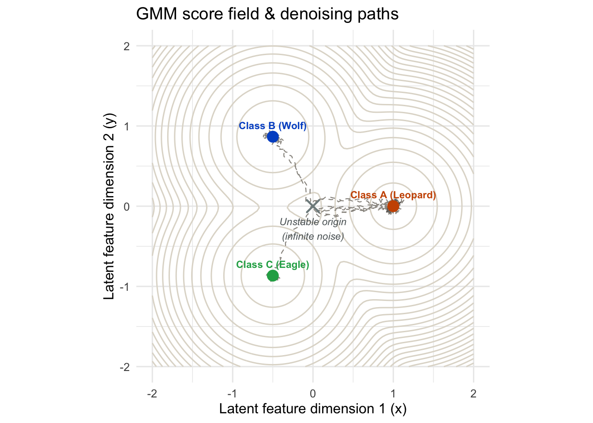
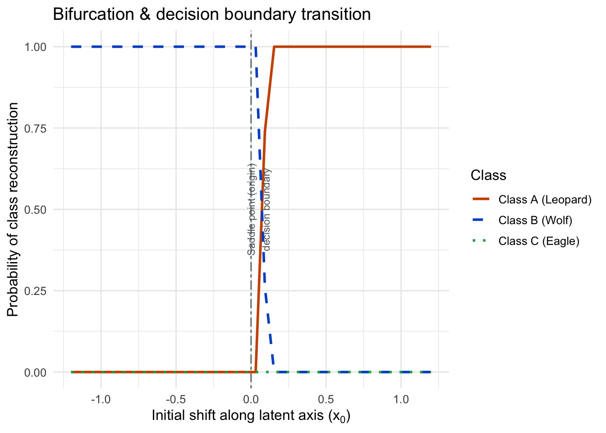

modes <- tibble(
class = c("A", "B", "C"),
name = c("Class A (Leopard)", "Class B (Wolf)", "Class C (Eagle)"),
mu_x = c(1.0, -0.5, -0.5),
mu_y = c(0.0, 0.866, -0.866),
weight = c(0.45, 0.30, 0.25),
col = c("#cc5500", "#0055cc", "#22aa55")
)
well_sigma <- 0.35 # width of each class well
noise_strength <- 0.15 # diffusion coefficient g
Note
This report was generated using AI under general human direction. At the time of generation, the contents have not been comprehensively reviewed by a human analyst.
Score-based diffusion models generate images (or other data) by starting from pure noise and running a stochastic process that flows toward the learned data distribution. Near the start of that process, a generated sample is maximally ambiguous about which class it will end up as; only later, as the process evolves, does it commit to one class or another. This explainer works through a small, fully analytic toy version of that story: a Gaussian mixture model (GMM) standing in for a learned multi-class data distribution, its exact score function, and simulated Langevin trajectories that visibly bifurcate from a shared, unstable point near the origin into one of several stable class basins.
The Gaussian mixture model
A Gaussian mixture model describes a density as a weighted sum of Gaussian components:
\[ p(x) = \sum_{k=1}^{K} \pi_k \, \mathcal{N}(x; \mu_k, \sigma^2 I), \qquad \sum_k \pi_k = 1, \]
where each component is centered at \(\mu_k\) with shared isotropic variance \(\sigma^2\), and the weights \(\pi_k\) are prior probabilities of each component. Here we use three components (“classes”) arranged symmetrically around the origin in 2D, with slightly unequal weights to mimic real-world class imbalance:
Why a GMM, specifically? Real generative models learn densities over very high-dimensional data (pixels, tokens, …), and their exact score function is intractable to write down. A GMM is one of the few densities whose score has a clean closed form, while still being genuinely multi-modal. That combination makes it a convenient minimal model for studying the qualitative behaviour of score-based generation — in particular, how a smooth, single density can nonetheless produce sharply distinct, discrete outcomes (the classes) when sampled dynamically. Nothing here is a claim that real data looks like a GMM; it is a controlled setting in which the mechanism of interest (symmetry breaking near an unstable point) can be derived and simulated exactly rather than approximated.
The score function
The central object in score-based generative modeling is the score, \(s(x) = \nabla_x \log p(x)\) — a vector field pointing in the direction of locally increasing density. Diffusion models are trained to approximate this quantity; here we can differentiate it directly.
For a single Gaussian component, \(\nabla_x \mathcal{N}(x;\mu,\sigma^2 I) = -\frac{x-\mu}{\sigma^2}\,\mathcal{N}(x;\mu,\sigma^2 I)\), so the gradient of the mixture density is a weighted sum of per-component “restoring forces”:
\[ \nabla p(x) = \sum_k \pi_k \, \mathcal{N}(x;\mu_k,\sigma^2 I) \left(-\frac{x - \mu_k}{\sigma^2}\right). \]
Dividing through by \(p(x)\) gives the score:
\[ s(x) = \nabla_x \log p(x) = \frac{\nabla p(x)}{p(x)} = \sum_k r_k(x) \left(-\frac{x-\mu_k}{\sigma^2}\right), \qquad r_k(x) = \frac{\pi_k \,\mathcal{N}(x;\mu_k,\sigma^2 I)}{p(x)}, \]
a responsibility-weighted average of the pulls toward each mode, where \(r_k(x)\) is the posterior probability that \(x\) “belongs” to component \(k\). Near a single well the responsibility for that component dominates and \(s(x) \approx -(x-\mu_k)/\sigma^2\), a simple linear pull toward \(\mu_k\). Near the origin, by the near-symmetric arrangement of the three modes, the three pulls partially cancel, leaving a weak and directionally ambiguous field — the seed of the bifurcation examined below.
gaussian_pdf <- function(x, y, mu_x, mu_y, sigma) {
exp(-((x - mu_x)^2 + (y - mu_y)^2) / (2 * sigma^2)) / (2 * pi * sigma^2)
}
gmm_density <- function(x, y) {
Reduce(`+`, pmap(modes, function(mu_x, mu_y, weight, ...) {
weight * gaussian_pdf(x, y, mu_x, mu_y, well_sigma)
}))
}
gmm_score <- function(x, y) {
p_tot <- gmm_density(x, y)
if (p_tot < 1e-12) return(c(0, 0))
grad <- pmap(modes, function(mu_x, mu_y, weight, ...) {
p_i <- weight * gaussian_pdf(x, y, mu_x, mu_y, well_sigma)
c(-(x - mu_x) / well_sigma^2 * p_i, -(y - mu_y) / well_sigma^2 * p_i)
})
Reduce(`+`, grad) / p_tot
}Langevin dynamics
Langevin dynamics is a stochastic differential equation (SDE) that combines deterministic drift up the score field with injected noise:
\[ dX_t = s(X_t)\,dt + g\,dW_t, \]
where \(W_t\) is a standard Wiener process and \(g\) is a (constant, here) diffusion coefficient. This is the overdamped limit of the physical Langevin equation for a particle in a potential \(U(x) = -\log p(x)\) subject to thermal noise, and it is the continuous-time process underlying score-based sampling: under mild conditions, its stationary distribution is exactly \(p(x)\). Two competing effects are at work: the drift term \(s(X_t)\,dt\) pulls the state toward high-density regions (deepening class wells), while the diffusion term \(g\,dW_t\) injects randomness that lets the state escape shallow or unstable regions — including, critically, the near-symmetric region around the origin.
Euler-Maruyama discretization
Simulating the SDE above requires discretizing it in time. The Euler-Maruyama method is the direct stochastic analogue of Euler’s method for ODEs: replace the continuous drift and diffusion with a single small step \(\Delta t\), and replace \(dW_t\) with a Gaussian increment of the correct variance:
\[ X_{t+1} = X_t + s(X_t)\,\Delta t + g\sqrt{\Delta t}\,Z_t, \qquad Z_t \overset{\text{iid}}{\sim} \mathcal{N}(0, I). \]
The \(\sqrt{\Delta t}\) scaling (rather than \(\Delta t\)) is essential and follows from the Wiener process’s defining property \(\mathrm{Var}(W_{t+\Delta t} - W_t) = \Delta t\): it is what keeps the discrete-time noise variance consistent with the continuous-time process as \(\Delta t \to 0\). Euler-Maruyama is only first-order accurate (weakly), but it is simple and sufficient for the qualitative picture here.
simulate_langevin_path <- function(x0, y0, steps = 150, dt = 0.01) {
x <- numeric(steps + 1); y <- numeric(steps + 1)
x[1] <- x0; y[1] <- y0
for (t in seq_len(steps)) {
s <- gmm_score(x[t], y[t])
noise <- rnorm(2)
nx <- x[t] + s[1] * dt + noise_strength * sqrt(dt) * noise[1]
ny <- y[t] + s[2] * dt + noise_strength * sqrt(dt) * noise[2]
# Cosmetic boundary cap so plotted paths stay within a fixed radius
r2 <- nx^2 + ny^2
if (r2 > 9) {
scale <- 3 / sqrt(r2)
nx <- nx * scale
ny <- ny * scale
}
x[t + 1] <- nx; y[t + 1] <- ny
}
tibble(step = 0:steps, x = x, y = y)
}Simulating the phase portrait
To visualize the potential landscape \(U(x) = -\log p(x)\), evaluate the GMM density on a grid, and overlay a handful of Langevin trajectories started with tiny random offsets from the origin (a stand-in for thermal fluctuations at maximal noise):
grid_size <- 100
grid_df <- expand.grid(
x = seq(-2, 2, length.out = grid_size),
y = seq(-2, 2, length.out = grid_size)
) |>
mutate(z = -log(gmm_density(x, y)))set.seed(7391)
num_paths <- 10
paths_df <- map_dfr(seq_len(num_paths), function(i) {
start <- rnorm(2, mean = 0, sd = 0.05)
simulate_langevin_path(start[1], start[2], steps = 200, dt = 0.01) |>
mutate(path_id = i)
})
# Last 15 steps of each path, used to draw a direction arrow
arrow_df <- paths_df |>
group_by(path_id) |>
filter(step >= max(step) - 15) |>
summarise(x0 = first(x), y0 = first(y), x1 = last(x), y1 = last(y), .groups = "drop")
mode_colors <- setNames(modes$col, modes$name)
# Classify each path's endpoint by nearest class well, for the narrative below
path_endpoint_summary <- paths_df |>
group_by(path_id) |>
slice_tail(n = 1) |>
ungroup() |>
rowwise() |>
mutate(nearest = modes$name[which.min((x - modes$mu_x)^2 + (y - modes$mu_y)^2)]) |>
ungroup() |>
count(nearest, name = "n_paths")ggplot() +
geom_contour(data = grid_df, aes(x, y, z = z), color = "#e0dad0", bins = 25) +
geom_path(data = paths_df, aes(x, y, group = path_id),
color = "#99958f", linewidth = 0.4, linetype = "dashed") +
geom_segment(data = arrow_df, aes(x = x0, y = y0, xend = x1, yend = y1),
arrow = arrow(length = unit(0.08, "inches")), color = "#6b6762", linewidth = 0.5) +
geom_point(data = modes, aes(mu_x, mu_y, color = name), size = 4) +
geom_text(data = modes, aes(mu_x, mu_y, label = name, color = name),
vjust = -1.1, fontface = "bold", size = 3, show.legend = FALSE) +
annotate("point", x = 0, y = 0, shape = 4, size = 4, stroke = 1.2, color = "#7f8c8d") +
annotate("text", x = 0, y = -0.28, label = "Unstable origin\n(infinite noise)",
color = "#5c6466", fontface = "italic", size = 3) +
scale_color_manual(values = mode_colors) +
coord_equal(xlim = c(-2, 2), ylim = c(-2, 2)) +
labs(
x = "Latent feature dimension 1 (x)", y = "Latent feature dimension 2 (y)",
title = "GMM score field & denoising paths", color = "Class"
) +
theme(legend.position = "none")
The contour lines are level sets of \(U(x)\): tight closed loops around each \(\mu_k\) mark the three stable wells (learned clean classes), while the region around the origin — equidistant from all three, in a near-symmetric configuration — is comparatively flat and unstable. Each dashed grey path starts with only a tiny random offset from the origin, yet visibly commits early to one basin; here 10 simulated trajectories split as Class A (Leopard): 7, Class B (Wolf): 2, Class C (Eagle): 1 — a small, noisy sample of a much larger population of possible outcomes, all governed by the same underlying dynamics.
Bifurcation and the decision boundary
The single-trajectory picture above is suggestive but noisy. To see the bifurcation itself, sweep a deterministic starting position along a fixed cross-section (here, varying \(x_0\) at fixed \(y_0=0.2\), a line that passes near the origin and separates the Class A and Class B wells), run many independent noisy trajectories per starting point, and record which well each one ends up nearest to. The resulting empirical fraction approximates
\[ \Pr(\text{collapse into class } k \mid x_0) \approx \frac{1}{n_{\text{reps}}} \sum_{r=1}^{n_{\text{reps}}} \mathbb{1}\!\left[\text{path}_r \text{ ends nearest } \mu_k\right]. \]
x_start_sweep <- seq(-1.2, 1.2, length.out = 40)
n_reps <- 50
sweep_df <- map_dfr(x_start_sweep, function(x0) {
closest <- map_chr(seq_len(n_reps), function(r) {
path <- simulate_langevin_path(x0, 0.2, steps = 150, dt = 0.01)
final <- tail(path, 1)
dists <- (final$x - modes$mu_x)^2 + (final$y - modes$mu_y)^2
modes$class[which.min(dists)]
})
tibble(x0 = x0, closest = closest)
})
prob_df <- sweep_df |>
count(x0, closest) |>
group_by(x0) |>
mutate(prob = n / n_reps) |>
ungroup() |>
# Ensure every (x0, class) pair is represented, even with zero collapses
right_join(expand.grid(x0 = x_start_sweep, closest = modes$class), by = c("x0", "closest")) |>
mutate(prob = coalesce(prob, 0)) |>
left_join(modes |> select(class, name), by = c("closest" = "class"))ggplot(prob_df, aes(x0, prob, color = name, linetype = name)) +
geom_line(linewidth = 1) +
geom_vline(xintercept = 0, color = "#7f8c8d", linetype = "twodash", linewidth = 0.6) +
annotate("text", x = 0.05, y = 0.5, label = "Saddle point (origin)\ndecision boundary",
angle = 90, color = "#5c6466", size = 3) +
scale_color_manual(values = mode_colors) +
scale_linetype_manual(values = c("solid", "dashed", "dotted")) +
labs(
x = expression("Initial shift along latent axis (" * x[0] * ")"),
y = "Probability of class reconstruction",
title = "Bifurcation & decision boundary transition",
color = "Class", linetype = "Class"
)
The transition from “always Class B” to “always Class A” happens over a narrow range of \(x_0\) straddling zero — the crossing point of the unstable origin. This is the discrete analogue of the single-trajectory picture above: whichever side of the (here, effectively one-dimensional) decision boundary a trajectory starts on almost entirely determines its eventual class, and the boundary itself sits exactly at the point where the score field’s pulls from competing wells are the most evenly matched.
Conclusion
Both figures illustrate the same mechanism from different angles: a smooth, unimodal-looking region of the density near the origin is not actually a stable point of the dynamics, but an unstable one. Under Langevin sampling, infinitesimal fluctuations there get amplified rather than damped, and the trajectory is swept into one of several well-separated, stable class basins. This is a simplified but exact picture of the qualitative claim behind score-based generative models: semantic categories emerge dynamically, as the resolution of instability near maximal noise, rather than being explicitly encoded anywhere in the model.
Note
This is a toy model, not a reproduction of any specific paper’s results: three 2D Gaussian components with hand-chosen weights and variance stand in for a real, high-dimensional, learned data distribution. The value of the exercise is that the score function, Langevin SDE, and Euler-Maruyama discretization are all exact and standard, so the qualitative bifurcation behaviour shown here is a real (if simplified) consequence of the same equations that govern actual diffusion models.